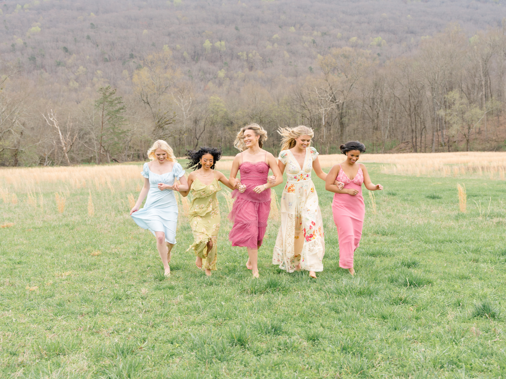
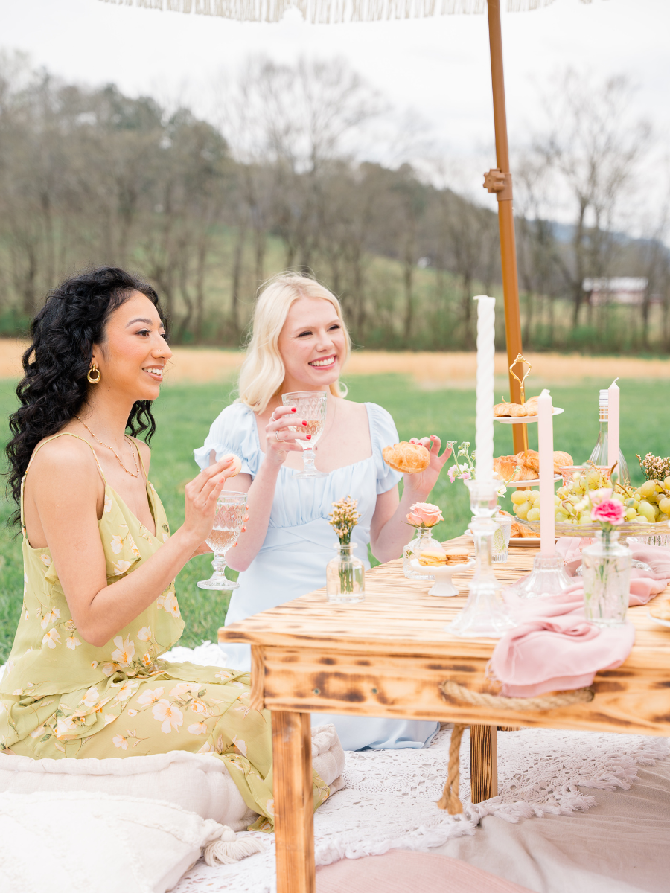
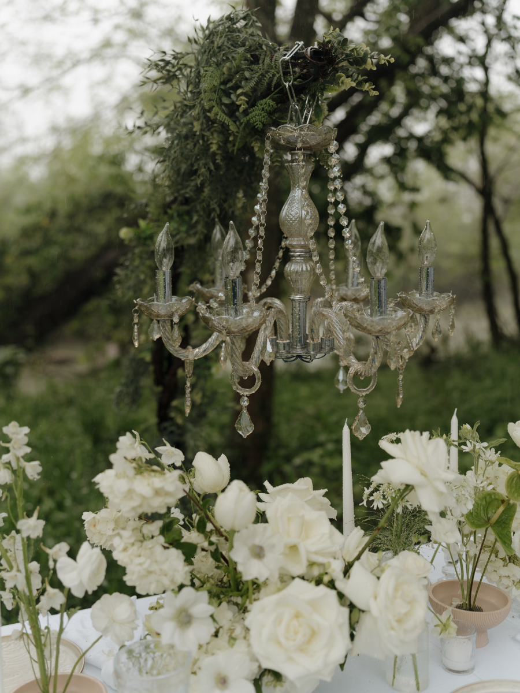

The Estate · Ceremony
The Valley
An open meadow beneath the ridge, for vows under a sky no room can imitate.
Scroll to open
An open meadow beneath the ridge, for vows under a sky no room can imitate.
The meadow sits low between the ridgelines, so the valley itself does the work a room would have to fake — scale, quiet, and a horizon that changes colour while you say your vows.
Where the aisle runs, which way you face, where your family sits, what stands behind you in the photographs your grandchildren will look at. These are decisions, not defaults — and they are yours to make.
Davis Hall sits minutes away with the same guest list and none of the panic. A forecast that turns on Thursday changes the room, not the day.




Come at four in the afternoon, when the ridge starts to throw shadow across the meadow. It is a difficult place to say no to at that hour.
Book a Visit